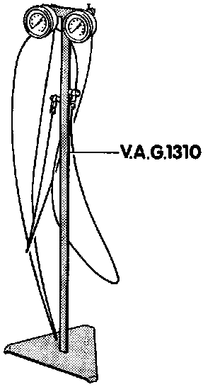
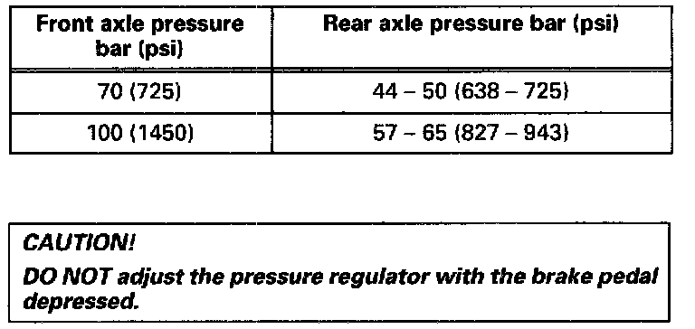

Load Compensator: Adjustments
Brake Pressure Regulator Location:

NOTE: Vehicles with Teves 20 GI ABS or ABS/EDL do not have a mechanical brake pressure regulator. Specially matched software in the ABS control module regulates rear axle brake pressure.
The brake pressure regulator is mounted on a bracket and operated by a spring attached to the rear axle.
NOTE: The brake pressure regulator should be checked and if necessary adjusted following repairs to the rear suspension, or when there is excessive rear brake wear.
CHECKING
- Depress brake pedal firmly once and release quickly (vehicle on ground).
- Pressure regulator lever must move.
CHECKING/ADJUSTING
NOTE: Check the regulator pressure with the vehicle emptied of cargo and all occupants except the driver, but with a full fuel tank, spare tire and suspension at normal ride height.
Brake Differential Pressure Gauge VAG 1310:

1. Raise vehicle and connect pressure gauges to left front caliper and right rear brake caliper/wheel cylinder.
2. Bleed both gauges.
3. Lower vehicle and bounce rear of car several times.
4 Depress brake pedal to obtain specified pressure at front axle, then read pressure at rear axle using the tables below:
Table Of Brake Pressures (Part 1 Of 2):

Table Of Brake Pressures (Part 2 Of 2):

5. Release brake pedal.
6. Adjust regulator spring tension.
7. If test pressure is too high: decrease spring tension
8. If test pressure is too low: increase spring tension
9. Recheck regulator pressures and re-adjust if necessary.
10. Disconnect pressure gauges and bleed brakes.